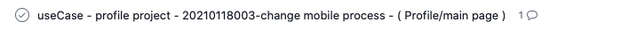
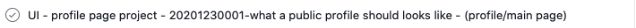
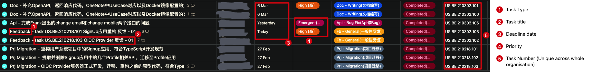
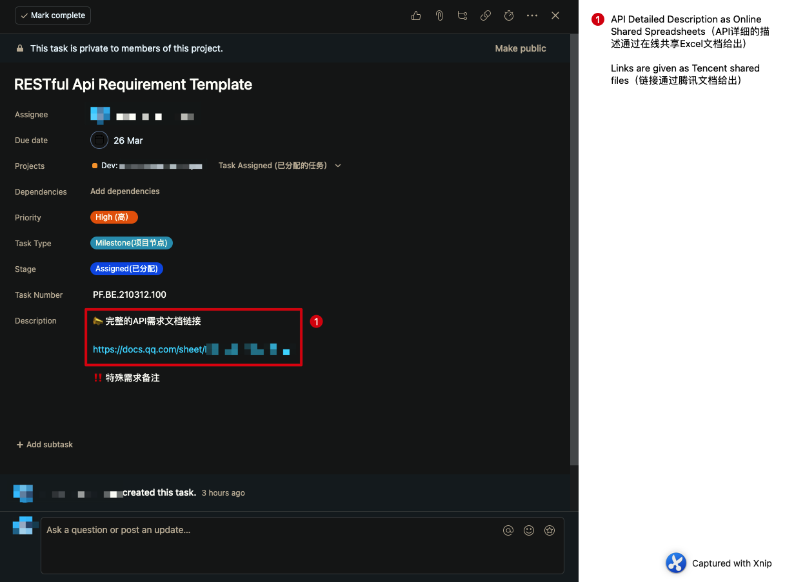
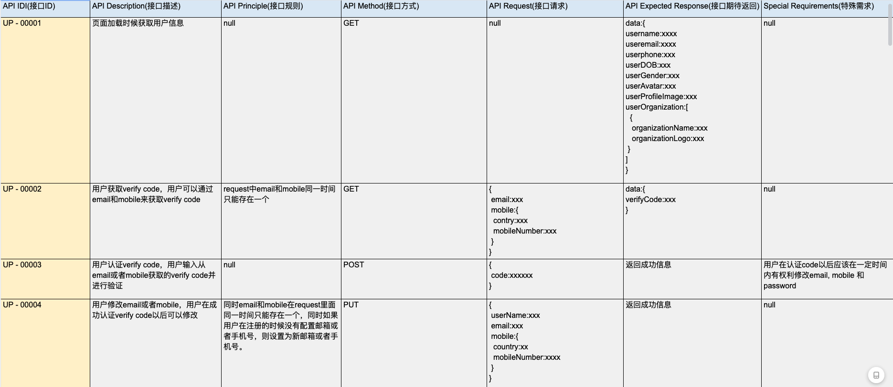

项目开发流程规范
在项目开发的过程中，会涉及到任务的分配，任务的安排以及阅读相关任务的文档。在该文档主要通过流程图的形式来对开发流程进行解释，请仔细阅读该文档，如有问题请联系.
- Travis (后端/Devops):
travis.yuan@datareachable.com - Frank (前端):
frank.su@datareachable.com
开发流程图
下面的开发流程图主要描述了开发过程中的一系列步骤
开发流程图详解
- 步骤 1： PM 会实时获取最新项目需求
- 步骤 2： PM 会分析当前获取的项目需求是存粹的 ui 开发，还是当前需求存在大量的用户交互，根据其分析来判断是否需要书写 useCase
- 步骤 3.1.1： 当前需求为纯 ui 开发，无需 useCase
- 步骤 3.1.2： PM 会将需求以任务的形式安排至 asana 所对应的 project 中
- 步骤 3.1.3： 开发根据所分配的任务并且对照 figma 中的设计样式进行开发
- 步骤 3.1.4： 开发完成后会进行 QA 与测试阶段
- 步骤 3.2.1： 当前需求存在大量用户的交互行为
- 步骤 3.2.2： PM 分析当前需求是否需要后端 api
- 步骤 3.2.2.1.1： 当前需求虽然存在大量交互，但是这些交互为纯前端业务逻辑，无需后端 api
- 步骤 3.2.2.1.2： PM 书写 useCase,并且上传到 oneNote 所对应的目录下
- 步骤 3.1.2.1.3： PM 会将需求以任务的形式安排至 asana 所对应的 project 中
- 步骤 3.1.2.1.4： 开发根据所分配的任务并且对照 figma 中的设计样式以及 useCase 中的业务逻辑进行开发
- 步骤 3.1.2.1.5： 开发完成后进行 QA 与测试阶段
- 步骤 3.2.2.2.1： 当前需求存在大量的用户交互，并且需要后端 api
- 步骤 3.2.2.2.2： PM 书写 useCase,并且上传到 oneNote 所对于的目录下
- 步骤 3.2.2.2.3.1.1/3.2.2.2.3.2.1： 前端/后端的 PM 会将需求以任务的形式安排至 asana 所对应的 project
- 步骤 3.2.2.2.3.1.2/3.2.2.2.3.2.2： 开发根据所分配的任务并且对照 figma 中的设计样式以及 useCase 中的业务逻辑进行开发
- 步骤 3.2.2.2.3.1.3/3.2.2.2.3.2.3： 开发完成后进行 QA 与测试阶段
asana 任务安排详解
前端 asana 任务详解
在前端开发中，每一个开发所接到的任务应该如下图所示
 每个 task 主要由一下几部分所组成（前缀）- （具体 gitHub repo）- （useCase ID） - （useCase/UI 所对应的目录）
- 前缀：前缀主要解释了当前项目任务类型，主要包括
UI，useCase，Bug和Task四种类型（未来可能会根据任务需求进行添加） - 具体 gitHub repo：如果项目中只有一个 github repo，则该选项为空，只有党项目中存在多个 repo 的时候，该选项才会存在
- useCase ID：该选项为 useCase 的 ID，开发人员只需要根据 useCase/UI 所对应的目录在 oneNote 中找到对应 ID 的 useCase 即可
- useCase/UI 所对应的目录：当前缀为
UI时，开发人员只需要在 figma 中找到对应目录的设计即可进行开发，如果前缀为useCase，开发人员需要在 oneNote 找到对应的 useCase 并且对照 figma 中相同路径的设计来进行开发
例子： 以下图为例
- 分析当前任务，可以得知当前任务为 useCase 类型
- 打开 oneNote, 根据
profile/main page路径找到对应的 note，并且查找 ID 为20210118003的 useCase - 打开 figma, 根据
profile/main page路径找到对应的设计样式，并且查到 ID 为20210118003的设计 - 根据获取到的 useCase 文档和 figma 设计进行开发
后端任务工作流程
总体描述
后端项目工作流总体的描述如下：
后端开发工作流程
重要提示：
- 代码质量检查是任务质量检查中的一项重要内容。操作流程请参考这里。
- 组员完成任务时，须按照规范提交相关的交付材料（后端交付要求）。可能包括如下材料：GitHub上的源码和项目说明README.md，Docker镜像上传到ghrc.io以及相关的使用文档，OpenAPI格式的API使用说明文档，API和UseCase匹配文档，其他设计图和文档，现场演示等；
- 所有的任务都是不可变的。这意味着一旦你完成了一个任务，你永远不被允许再次重启、修改同一个任务。进一步的对已完成任务的相关反馈和后续任务作为新任务发布。原来的已完成任务的质量被锁定并计入到你的绩效中。你只能通过新任务的完成质量来弥补老任务上的损失。
后端工作流例子
第一步
当一个开发人员参与进某一个项目中以后，他/她会被邀请加入一个Asana项目。该项目由团队组长管理，组员在项目中只有有限的操作权限以防止没有管理员权限的组员擅自更改分配到的任务。
第二步
任务在相关的Asana项目中发布和分配。
 Asana项目的例子
Asana项目的例子第三步
任务的细节会在相应的Asana任务中详细描述。
涉及到RESTful API的任务时，目前，RESTful API需求由前端团队通过Asana任务的形式发布。后端团队组长负责集中，重组这些API需求，并将其合理分配给组员完成。通常情况下，这些API需求以线上的共享Excel表格形式描述。
为了理解RESTful API需求任务的细节，请参考下面的后端Restful API需求样例部分。
Asana 任务例子 (列表视图)说明：
- 任务类型
- 任务标题
- 任务截止日期
- 任务优先级（当有多个任务时，按照优先级顺序完成，优先级顺序一般由团队组长确定）
- 任务编号（全公司唯一的任务编号，用于记录绩效）
 Asana 任务细节 1
Asana 任务细节 1 Asana 任务细节 2
Asana 任务细节 2第四步:
最后，任务完成时，需要将相关的Asana任务标记为完成，并且提交相关的交付材料。具体示例，参考任务提交。
后端Restful API需求样例
本节给出RESTful API是如何通过Asana来发布的例子。
Asana 任务例子
Asana 任务 (RESTful API 需求)API 描述样例
RESTful API 需求细节通过在线的Excel共享文档给出（使用腾讯文档以方便在中国访问）。
RESTful API 细节描述 (使用Excel文档描述)